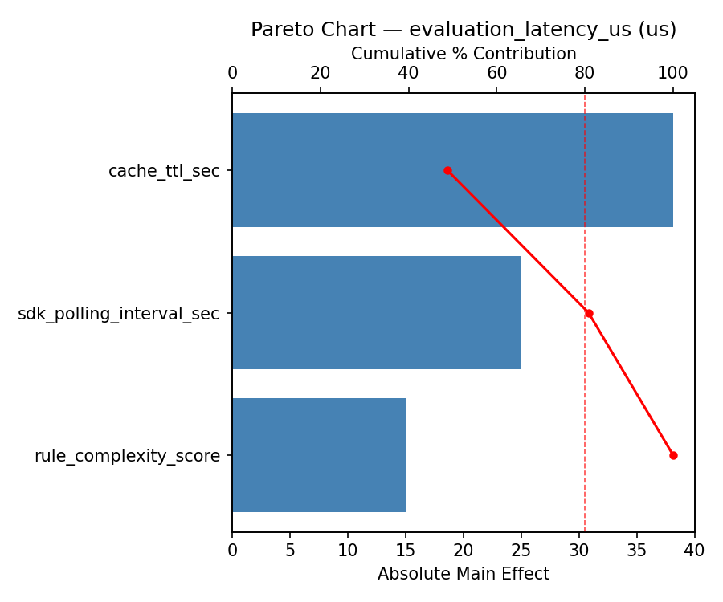
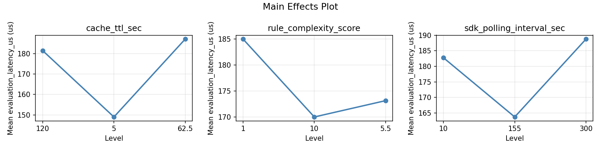
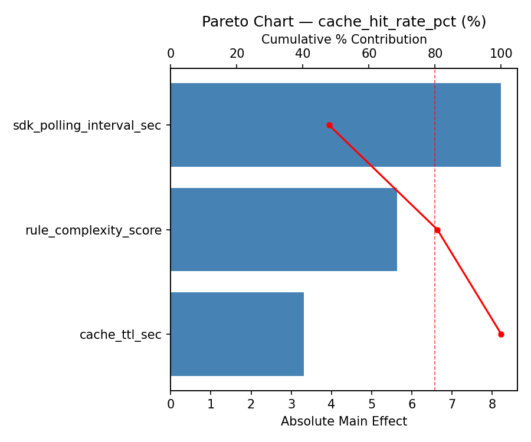
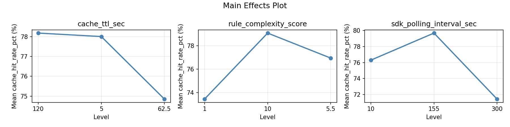
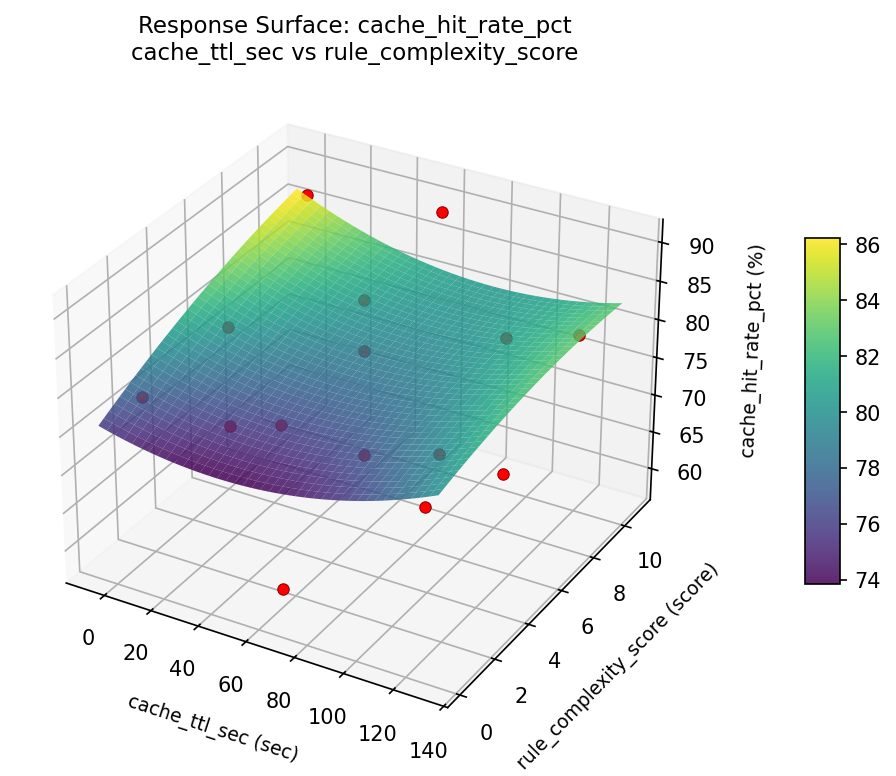
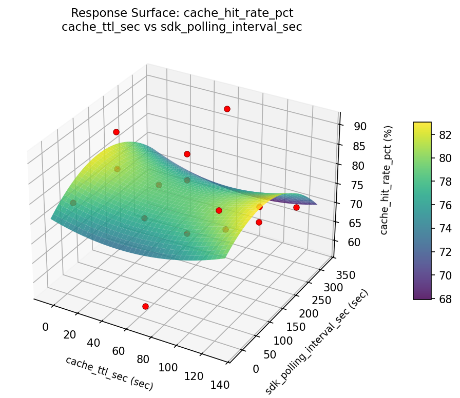
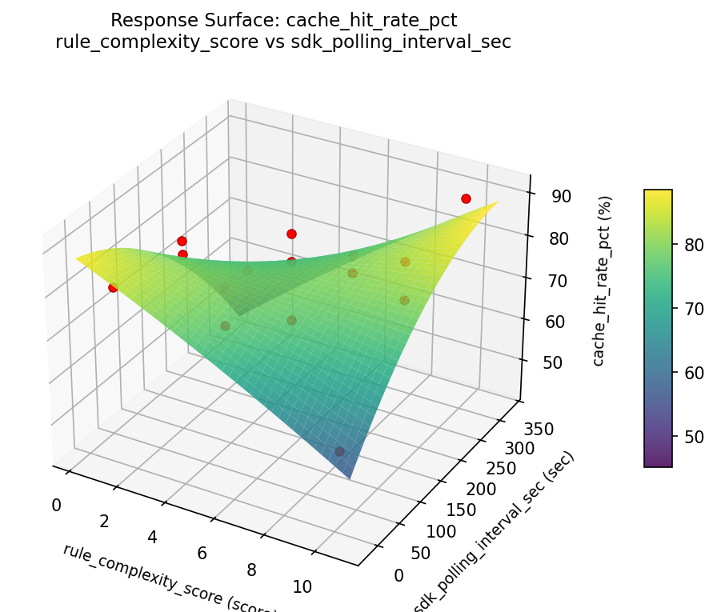
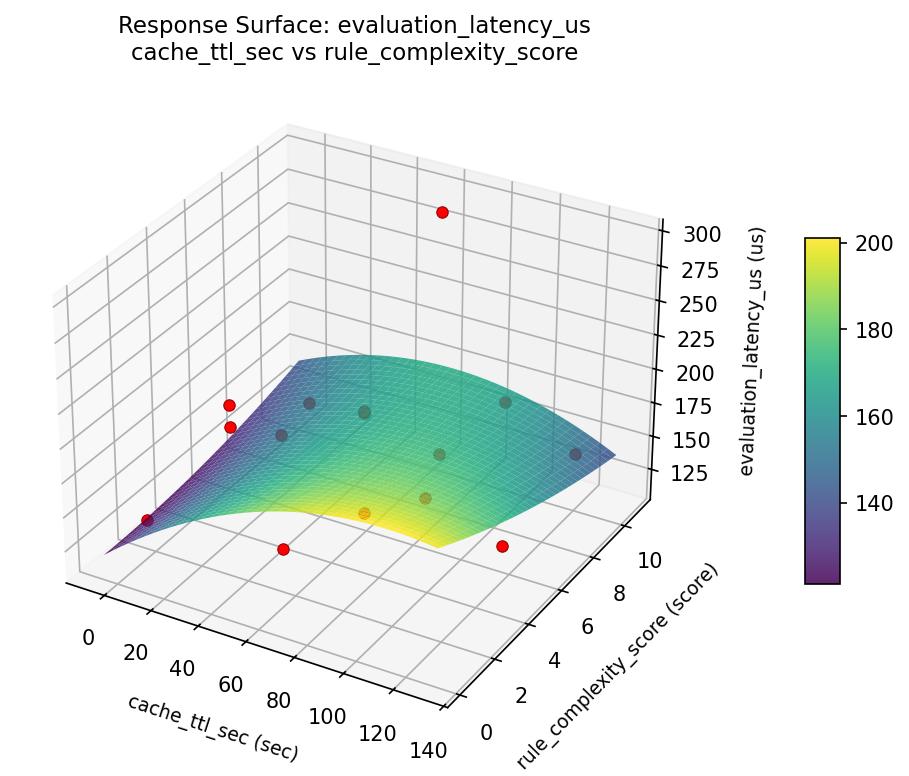
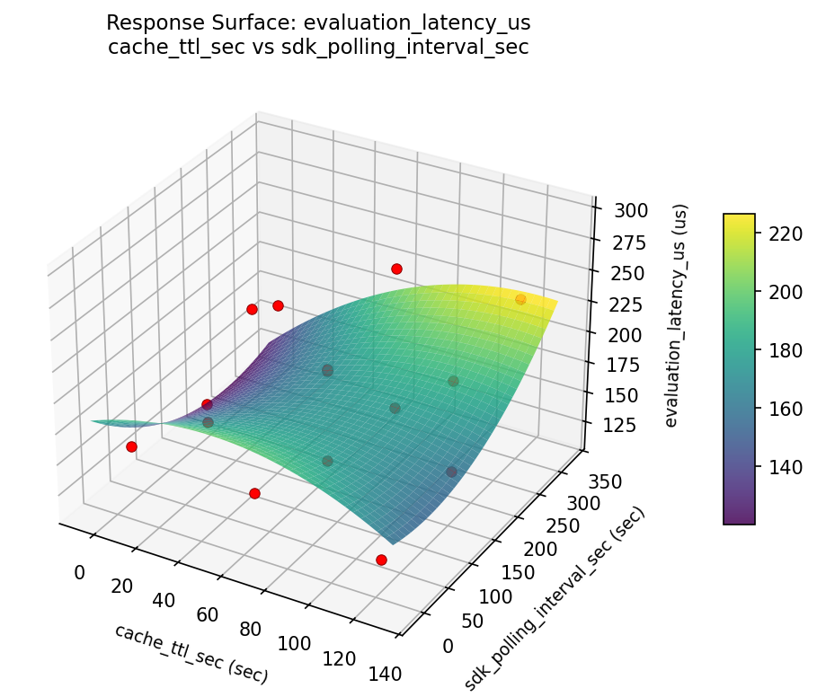
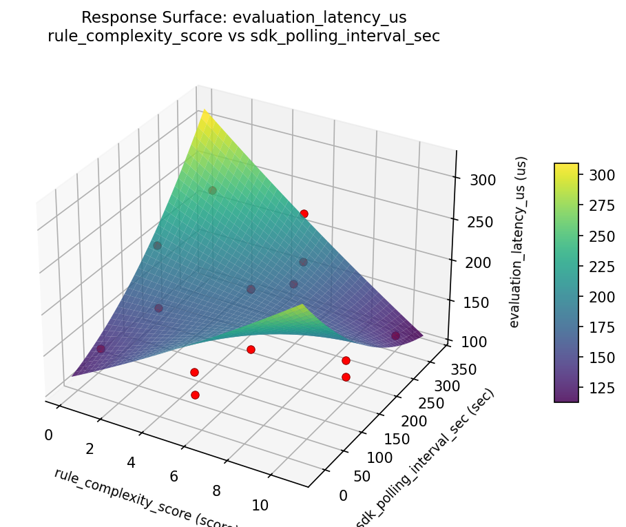

Experimental Setup
Factors
| Factor | Low | High | Unit |
|---|
cache_ttl_sec | 5 | 120 | sec |
rule_complexity_score | 1 | 10 | score |
sdk_polling_interval_sec | 10 | 300 | sec |
Fixed: platform = launchdarkly, sdk = server_side
Responses
| Response | Direction | Unit |
|---|
evaluation_latency_us | ↓ minimize | us |
cache_hit_rate_pct | ↑ maximize | % |
Configuration
{
"metadata": {
"name": "Feature Flag Evaluation",
"description": "Box-Behnken design to tune cache TTL, rule complexity, and SDK polling interval for evaluation latency and cache hits"
},
"factors": [
{
"name": "cache_ttl_sec",
"levels": [
"5",
"120"
],
"type": "continuous",
"unit": "sec"
},
{
"name": "rule_complexity_score",
"levels": [
"1",
"10"
],
"type": "continuous",
"unit": "score"
},
{
"name": "sdk_polling_interval_sec",
"levels": [
"10",
"300"
],
"type": "continuous",
"unit": "sec"
}
],
"fixed_factors": {
"platform": "launchdarkly",
"sdk": "server_side"
},
"responses": [
{
"name": "evaluation_latency_us",
"optimize": "minimize",
"unit": "us"
},
{
"name": "cache_hit_rate_pct",
"optimize": "maximize",
"unit": "%"
}
],
"settings": {
"operation": "box_behnken",
"test_script": "use_cases/84_feature_flag_evaluation/sim.sh"
}
}
Experimental Matrix
The Box-Behnken Design produces 15 runs. Each row is one experiment with specific factor settings.
| Run | cache_ttl_sec | rule_complexity_score | sdk_polling_interval_sec |
|---|
| 1 | 62.5 | 1 | 10 |
| 2 | 62.5 | 5.5 | 155 |
| 3 | 120 | 5.5 | 300 |
| 4 | 120 | 5.5 | 10 |
| 5 | 62.5 | 5.5 | 155 |
| 6 | 62.5 | 5.5 | 155 |
| 7 | 5 | 5.5 | 300 |
| 8 | 120 | 1 | 155 |
| 9 | 62.5 | 1 | 300 |
| 10 | 120 | 10 | 155 |
| 11 | 5 | 5.5 | 10 |
| 12 | 62.5 | 10 | 300 |
| 13 | 5 | 1 | 155 |
| 14 | 5 | 10 | 155 |
| 15 | 62.5 | 10 | 10 |
Step-by-Step Workflow
1
Preview the design
$ python doe.py info --config use_cases/84_feature_flag_evaluation/config.json
2
Generate the runner script
$ python doe.py generate --config use_cases/84_feature_flag_evaluation/config.json \
--output use_cases/84_feature_flag_evaluation/results/run.sh --seed 42
3
Execute the experiments
$ bash use_cases/84_feature_flag_evaluation/results/run.sh
4
Analyze results
$ python doe.py analyze --config use_cases/84_feature_flag_evaluation/config.json
5
Get optimization recommendations
$ python doe.py optimize --config use_cases/84_feature_flag_evaluation/config.json
6
Generate the HTML report
$ python doe.py report --config use_cases/84_feature_flag_evaluation/config.json \
--output use_cases/84_feature_flag_evaluation/results/report.html
Features Exercised
| Feature | Value |
|---|
| Design type | box_behnken |
| Factor types | continuous (all 3) |
| Arg style | double-dash |
| Responses | 2 (evaluation_latency_us ↓, cache_hit_rate_pct ↑) |
| Total runs | 15 |
Analysis Results
Generated from actual experiment runs using the DOE Helper Tool.
Response: evaluation_latency_us
Top factors: cache_ttl_sec (44.1%), sdk_polling_interval_sec (37.6%), rule_complexity_score (18.3%).
Pareto Chart

Main Effects Plot

Response: cache_hit_rate_pct
Top factors: sdk_polling_interval_sec (39.6%), cache_ttl_sec (32.9%), rule_complexity_score (27.6%).
Pareto Chart

Main Effects Plot

Response Surface Plots
3D surfaces fitted with quadratic RSM. Red dots are observed data points.
cache hit rate pct cache ttl sec vs rule complexity score

cache hit rate pct cache ttl sec vs sdk polling interval sec

cache hit rate pct rule complexity score vs sdk polling interval sec

evaluation latency us cache ttl sec vs rule complexity score

evaluation latency us cache ttl sec vs sdk polling interval sec

evaluation latency us rule complexity score vs sdk polling interval sec

Full Analysis Output
=== Main Effects: evaluation_latency_us ===
Factor Effect Std Error % Contribution
--------------------------------------------------------------
cache_ttl_sec 59.4286 13.4490 44.1%
sdk_polling_interval_sec 50.7143 13.4490 37.6%
rule_complexity_score 24.6786 13.4490 18.3%
=== Summary Statistics: evaluation_latency_us ===
cache_ttl_sec:
Level N Mean Std Min Max
------------------------------------------------------------
120 4 173.5000 49.8297 125.0000 232.0000
5 4 214.0000 62.1664 145.0000 295.0000
62.5 7 154.5714 40.6811 115.0000 234.0000
rule_complexity_score:
Level N Mean Std Min Max
------------------------------------------------------------
1 4 180.7500 79.3405 125.0000 295.0000
10 4 189.2500 41.7722 150.0000 232.0000
5.5 7 164.5714 45.0217 115.0000 234.0000
sdk_polling_interval_sec:
Level N Mean Std Min Max
------------------------------------------------------------
10 4 141.0000 8.9815 129.0000 150.0000
155 7 191.7143 70.5070 115.0000 295.0000
300 4 181.5000 19.7400 157.0000 198.0000
=== Main Effects: cache_hit_rate_pct ===
Factor Effect Std Error % Contribution
--------------------------------------------------------------
sdk_polling_interval_sec 8.2250 2.6857 39.6%
cache_ttl_sec 6.8357 2.6857 32.9%
rule_complexity_score 5.7321 2.6857 27.6%
=== Summary Statistics: cache_hit_rate_pct ===
cache_ttl_sec:
Level N Mean Std Min Max
------------------------------------------------------------
120 4 73.3500 12.7788 59.1000 88.2000
5 4 73.5000 10.5233 58.1000 81.0000
62.5 7 80.1857 9.3269 65.9000 90.6000
rule_complexity_score:
Level N Mean Std Min Max
------------------------------------------------------------
1 4 74.9500 15.2906 58.1000 88.2000
10 4 73.5250 9.8375 59.1000 80.4000
5.5 7 79.2571 8.4150 67.3000 90.6000
sdk_polling_interval_sec:
Level N Mean Std Min Max
------------------------------------------------------------
10 4 81.5500 4.0870 78.8000 87.6000
155 7 75.6000 13.7419 58.1000 90.6000
300 4 73.3250 7.8249 65.9000 81.0000
Optimization Recommendations
=== Optimization: evaluation_latency_us ===
Direction: minimize
Best observed run: #8
cache_ttl_sec = 62.5
rule_complexity_score = 1
sdk_polling_interval_sec = 300
Value: 115.0
RSM Model (linear, R² = 0.3217, Adj R² = 0.1367):
Coefficients:
intercept +175.4667
cache_ttl_sec +31.1250
rule_complexity_score -3.5000
sdk_polling_interval_sec -23.3750
RSM Model (quadratic, R² = 0.7552, Adj R² = 0.3145):
Coefficients:
intercept +209.6667
cache_ttl_sec +31.1250
rule_complexity_score -3.5000
sdk_polling_interval_sec -23.3750
cache_ttl_sec*rule_complexity_score -51.0000
cache_ttl_sec*sdk_polling_interval_sec -5.7500
rule_complexity_score*sdk_polling_interval_sec -15.5000
cache_ttl_sec^2 -12.4583
rule_complexity_score^2 -22.2083
sdk_polling_interval_sec^2 -29.4583
Curvature analysis:
sdk_polling_interval_sec coef=-29.4583 concave (has a maximum)
rule_complexity_score coef=-22.2083 concave (has a maximum)
cache_ttl_sec coef=-12.4583 concave (has a maximum)
Notable interactions:
cache_ttl_sec*rule_complexity_score coef=-51.0000 (antagonistic)
rule_complexity_score*sdk_polling_interval_sec coef=-15.5000 (antagonistic)
cache_ttl_sec*sdk_polling_interval_sec coef=-5.7500 (antagonistic)
Predicted optimum (from quadratic model):
cache_ttl_sec = 120
rule_complexity_score = 1
sdk_polling_interval_sec = 155
Predicted value: 260.6250
Model quality: Good fit — general trends are captured, some noise remains.
Factor importance:
1. cache_ttl_sec (effect: 62.2, contribution: 46.0%)
2. sdk_polling_interval_sec (effect: 50.4, contribution: 37.2%)
3. rule_complexity_score (effect: 22.7, contribution: 16.8%)
=== Optimization: cache_hit_rate_pct ===
Direction: maximize
Best observed run: #8
cache_ttl_sec = 62.5
rule_complexity_score = 1
sdk_polling_interval_sec = 300
Value: 90.6
RSM Model (linear, R² = 0.2710, Adj R² = 0.0722):
Coefficients:
intercept +76.5800
cache_ttl_sec -6.0375
rule_complexity_score -1.4750
sdk_polling_interval_sec +3.5625
RSM Model (quadratic, R² = 0.6111, Adj R² = -0.0889):
Coefficients:
intercept +72.8333
cache_ttl_sec -6.0375
rule_complexity_score -1.4750
sdk_polling_interval_sec +3.5625
cache_ttl_sec*rule_complexity_score +9.6250
cache_ttl_sec*sdk_polling_interval_sec -4.2000
rule_complexity_score*sdk_polling_interval_sec +2.1250
cache_ttl_sec^2 +2.8833
rule_complexity_score^2 +2.5083
sdk_polling_interval_sec^2 +1.6333
Curvature analysis:
cache_ttl_sec coef=+2.8833 convex (has a minimum)
rule_complexity_score coef=+2.5083 convex (has a minimum)
sdk_polling_interval_sec coef=+1.6333 convex (has a minimum)
Notable interactions:
cache_ttl_sec*rule_complexity_score coef=+9.6250 (synergistic)
cache_ttl_sec*sdk_polling_interval_sec coef=-4.2000 (antagonistic)
rule_complexity_score*sdk_polling_interval_sec coef=+2.1250 (synergistic)
Predicted optimum (from linear model):
cache_ttl_sec = 5
rule_complexity_score = 5.5
sdk_polling_interval_sec = 300
Predicted value: 86.1800
Model quality: Weak fit — consider adding center points or using a different design.
Factor importance:
1. cache_ttl_sec (effect: 12.1, contribution: 52.8%)
2. sdk_polling_interval_sec (effect: 7.1, contribution: 31.2%)
3. rule_complexity_score (effect: 3.7, contribution: 16.0%)